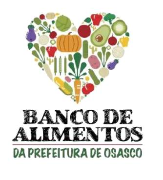

<mat-toolbar class="tollbar">
    

    <div class="spacer">
    </div>

      <a class="example-spacer" [routerLink] = "['/dashbord']">Estoque</a>
      
      <a class="example-spacer" [routerLink] = "['/user']">Voluntários</a>

</mat-toolbar>
<router-outlet></router-outlet>